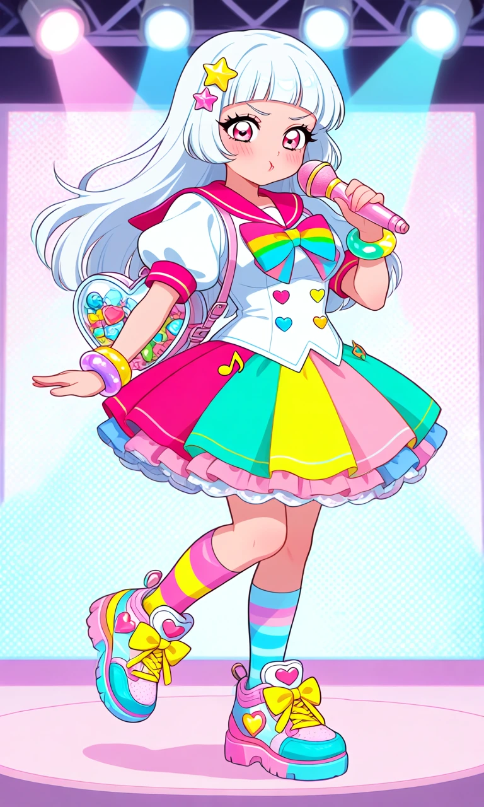
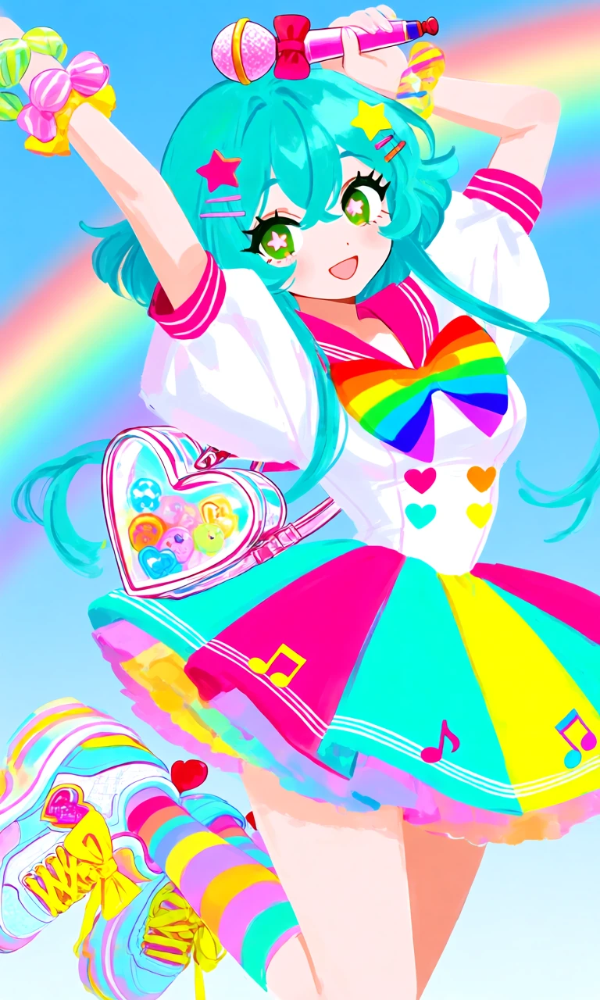

Bubblegum Encore

Outfit Prompt
She wears an energetic bubblegum-pop idol dress featuring a short pleated skirt with alternating hot-pink, turquoise, and lemon-yellow panels. The fitted white bodice has colorful heart-shaped buttons, oversized puffy sleeves, a bright pink sailor collar, and a giant rainbow bow at the chest. The skirt has multiple layers of colorful ruffles and little music-note decorations.
Accessories include a heart-shaped microphone, colorful star hair clips, oversized candy-colored bracelets, and a tiny transparent heart-shaped backpack filled with colorful charms.
Her shoes are chunky pastel rainbow platform sneakers with oversized bows, bright yellow laces, heart-shaped decorations, and mismatched striped knee-high socks.
Outfit Examples



